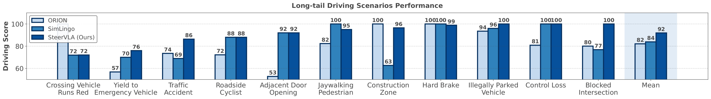
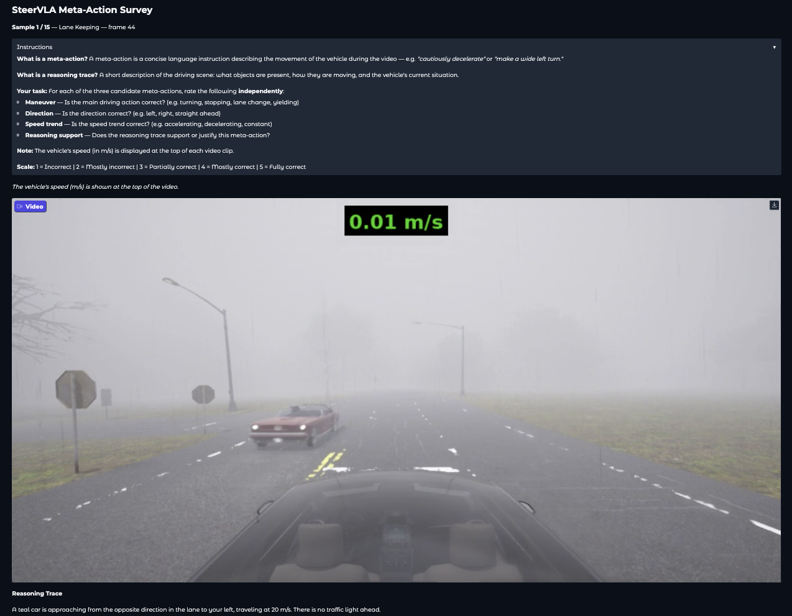
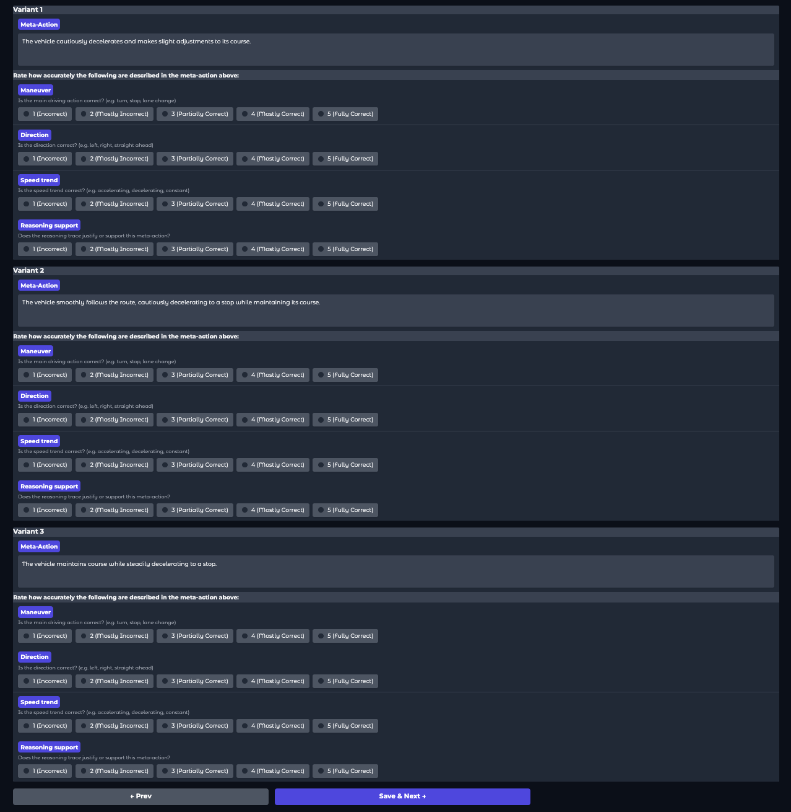

We compare SteerVLA with existing methods ORION and SimLingo on Bench2Drive-LongTail, a subset of Bench2Drive consisting of 11 long-tail scenarios. SteerVLA achieves stronger gains in long-tail scenarios, suggesting that fine-grained reasoning can effectively handle many such cases. Both SteerVLA and SimLingo underperform ORION on Crossing Vehicle Runs Red due to limited perception from a single front-view camera. In contrast, ORION leverages multi-view cameras (including side views), which enables earlier detection of cross-traffic in this scenario.

In the below videos, we show a shorter version of the reasoning trace and meta-action, extracting the key information, from the high-level policy outputs in 2 long-tail scenarios for clarity and readability. The green dots represent the future waypoint outputs from the low-level policy.
In the below videos, we show the original output (meta-action + reasoning trace) from the high-level policy of SteerVLA in 6 long-tail scenarios. The green dots represent the future waypoint outputs from the low-level policy.
The vehicle must merge around an accident blocking the road.
A car in the oncoming lane turns into the current lane.
The vehicle is turning and must yield to a pedestrian crossing the road.
The vehicle encounters a jaywalking pedestrian crossing the road.
The vehicle ahead brakes suddenly.
A static vehicle cuts in front of the ego vehicle on the highway.
| Prompt Variant | Meta-action | Reasoning Support | |||
|---|---|---|---|---|---|
| Maneuver | Direction | Speed | Mean | ||
| Original prompt | 4.29 ± 0.74 | 4.32 ± 0.84 | 4.31 ± 0.84 | 4.31 ± 0.69 | 3.61 ± 0.89 |
| Paraphrased prompt 1 | 4.18 ± 0.78 | 4.22 ± 0.82 | 4.12 ± 0.88 | 4.17 ± 0.69 | 3.61 ± 0.94 |
| Paraphrased prompt 2 | 4.21 ± 0.77 | 4.29 ± 0.88 | 4.16 ± 0.83 | 4.22 ± 0.70 | 3.57 ± 0.94 |
We evaluate reasoning and meta-action labels with 13 evaluators on 60 samples across 9 driving skills (including long-tail scenarios), with each sample rated by 3-4 annotators. For each video, annotators score meta-action quality (maneuver, direction, speed; 1-5) and reasoning support (1-5). We also test prompt sensitivity using two paraphrased prompts (3 variants total) under the same protocol.


| Hyperparameter | Value |
|---|---|
| Batch Size | 96 |
| Gradient Accumulation Steps | 2 |
| Epochs | 20 |
| Learning Rate | 3 × 10-5 |
| Learning Rate Scheduler | Cosine Decay |
| Betas | (0.9, 0.999) |
| Optimizer | AdamW |
| Warmup steps | 5% of total steps |
| LoRA alpha | 64 |
| LoRA r | 32 |
| LoRA dropout | 0.1 |
| Hyperparameter | Value |
|---|---|
| Batch Size | 120 |
| Gradient Accumulation Steps | 1 |
| Epochs | 30 |
| Learning Rate | 3 × 10-5 |
| Learning Rate Scheduler | Cosine Decay |
| Betas | (0.9, 0.999) |
| Optimizer | AdamW |
| Warmup steps | 5% of total steps |
| LoRA alpha | 64 |
| LoRA r | 32 |
| LoRA dropout | 0.1 |